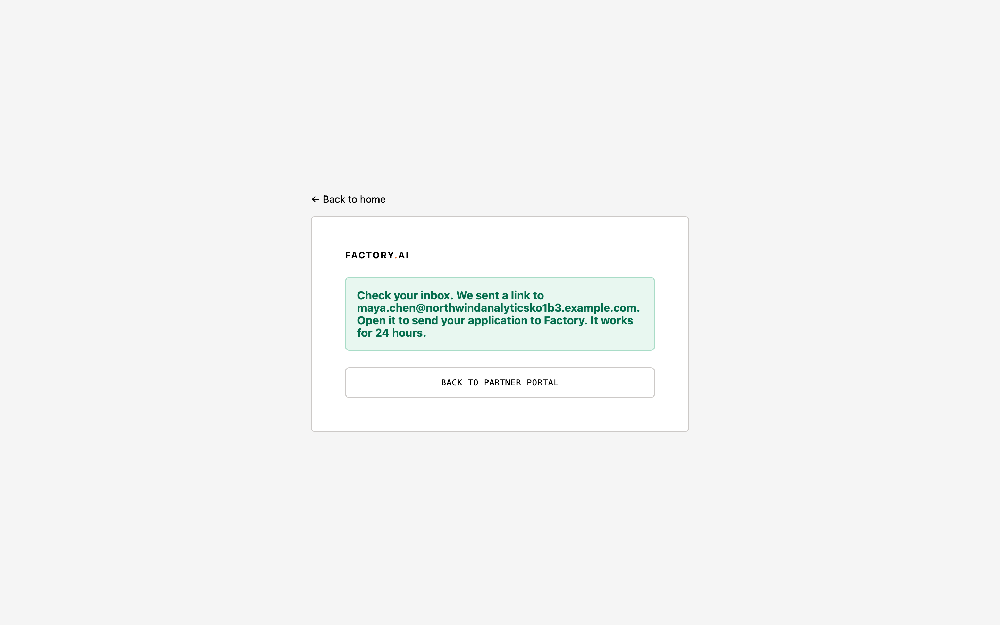
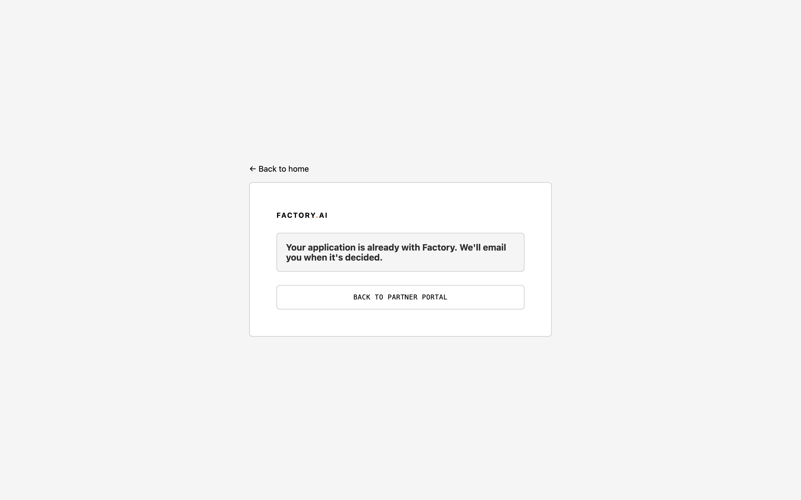
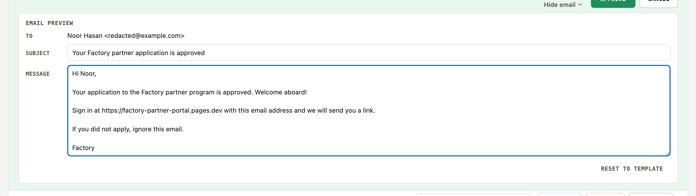
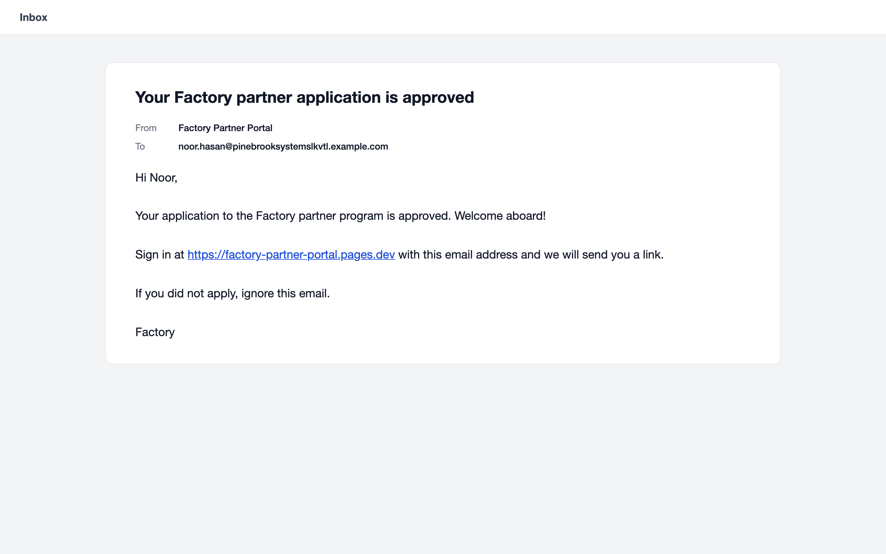
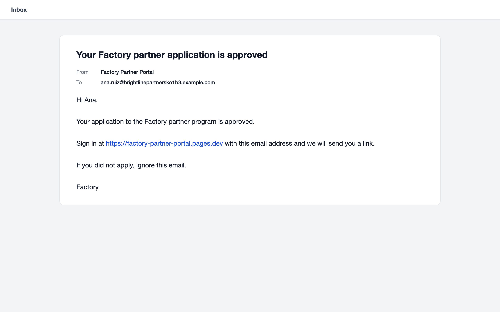
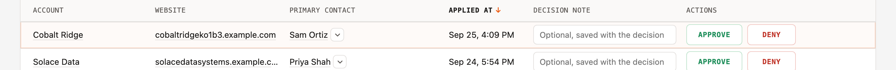
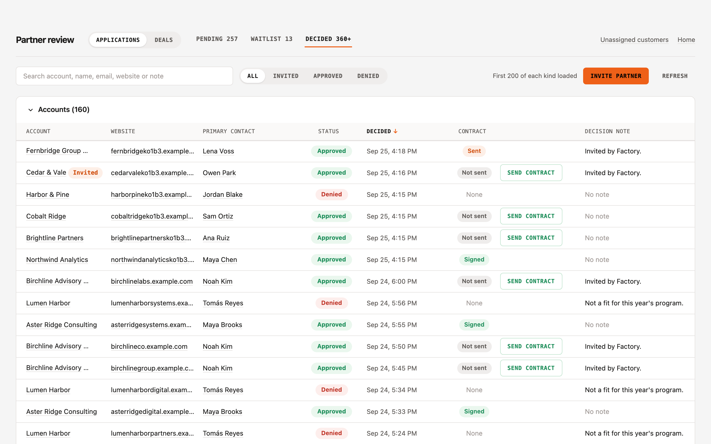
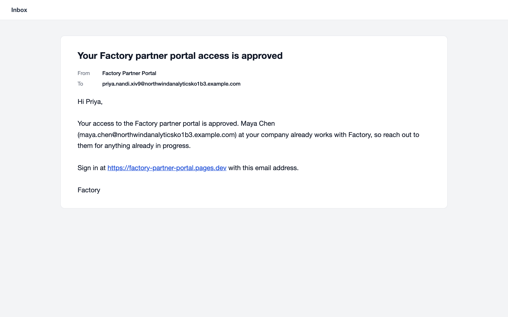

00
Setup
- Portal: https://factory-partner-portal.pages.dev (runs the Week 3 build).
- Wake the service first: health check. Expect
"ok":trueand"sf":"ok". The first call can take about 20 seconds. - Keep three tabs open: the Partner Review app, Portal Audit Log, All, and your Domestique inbox.
- Use a fresh company name and website for each new company, and a Domestique address with a plus tag (
blair.purdy+<tag>@domestique.info).
01
Email verification before review
You are the applicant. Five minutes.
| # | Do | Expect | Proves | Confirm where |
|---|---|---|---|---|
| 1.1 | Apply at https://factory-partner-portal.pages.dev/apply as a new company, with a fresh name and website and a Domestique plus address. | A "Check your inbox" page naming your address. The company is not in Partner Review yet. | Nothing is created until the applicant proves the address. | Partner Review, Pending |
 Check your inbox | ||||
| 1.2 | Open the verification email and click its link. | A "Thanks" page. The company now shows in Partner Review, Pending, Accounts. | The verified link creates the application. | Partner Review, Pending |
 Verified Verified | ||||
| 1.3 | Click the same verification link again. | A page saying the application is already with Factory. Still one row in Pending. | A link can't create a second application. | Partner Review, Pending |
 Already applied | ||||
02
Review decisions
You are the Factory operator, in Partner Review. Ten minutes.
| # | Do | Expect | Proves | Confirm where |
|---|---|---|---|---|
| 2.1 | Pending: on the 1.1 company click Approve, then Preview email. Change one word in the message, then confirm. | The preview opens at once, with the subject and message editable. The toast has a View link, and the row shows in Decided as Approved with the decided time. The approval email arrives with your edit. | Approve shows the email first, and it can be edited for that one send. | Partner Review, Decided; inbox |
 Edit the message Edited sentence | ||||
| 2.2 | Apply, verify and approve a second company without editing the email. | The email arrives with the standard template text, without the edit from 2.1. | An edit changes one send, never the template. | Inbox |
 Template message | ||||
| 2.3 | Apply and verify a third company, then click Waitlist on it and confirm. | The row moves to the Waitlist tab. No email arrives. A sign-in request for that address sends no link. | Waitlisted applicants get no email and no access. | Partner Review, Waitlist; inbox |
 Waitlisted account | ||||
| 2.4 | Waitlist tab: Approve that company and confirm. | It moves to Decided as Approved, and the approval email arrives. | Factory can decide on a waitlisted applicant later. | Partner Review, Decided; inbox |
 Cobalt Ridge, Approved Cobalt Ridge, Approved | ||||
| 2.5 | Apply and verify a fourth company, then Deny it with Preview email and confirm. | Decided shows Denied. The denial email arrives. | Deny works with the same preview step. | Partner Review, Decided; inbox |
 Harbor & Pine, Denied | ||||
| 2.6 | Colleague: apply using the 1.1 company's website and a new address, then click the verification link. | You land signed in on the dashboard. A welcome email arrives naming the company's primary contact. Decided shows the person Approved with the note "Approved automatically: ...". | A new contact at an approved company is approved automatically. | Partner Review, Decided; inbox |
 Names primary contact | ||||
03
After the pass
- Leave the test companies in the sandbox; nothing needs deleting.
- Send findings back as step number plus what you saw.
Notes
- Use a Domestique address. Gmail filters the sandbox sender until factory.ai's email settings list Salesforce, which is on the handoff list.
- Step 2.6: the automated suite did not see the colleague email in its last run, and a fix is in progress. If the email does not arrive, note it against 2.6.